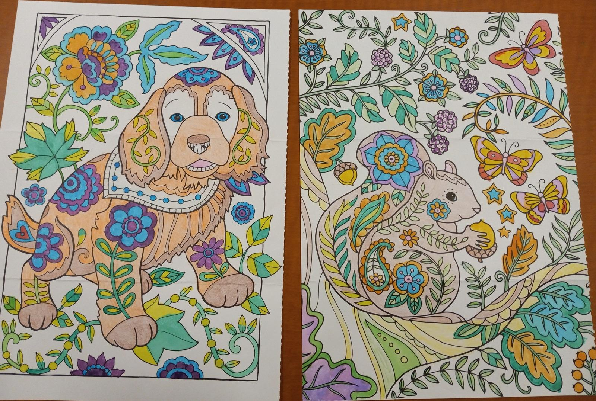

"I want you to keep this letter and read it in times of difficulty." This sentence appears near the end of a deeply moving letter of love and support. Was it a letter from a volunteer to a prisoner? No. Was it a letter from a prisoner to a volunteer? Also no.
The letter was sent to a person who did not, as far as we know, have any connection to anyone in prison. The person apparently treasured the letter, keeping it flat within the pages of a book. Unfortunately, the letter was forgotten when the book was later given away.
We find similar items in used books almost every week. Some appear to have been placed in books for safekeeping, while others were clearly being used as bookmarks. Items have included a child's artwork, family photos, two prescriptions from an otorhinolaryngologist for controlled substances, pressed flowers, a tax form (complete with enough information to steal the recipient's identity), a lottery ticket, dollar bills, business cards, a membership card for a golf club, and airplane boarding passes. Recently, a volunteer learned about purchases her spouse had made when she discovered three of his credit card receipts in a book!
We check books carefully before sending them, both to protect the privacy of book donors and to prevent the incarcerated recipients of books from getting in trouble for possessing "contraband". However, we are seldom able to reunite the misplaced treasures found within books with their rightful owners.
So, if you plan to donate books to us, please flip through them first and remove any items you find.
"I'd like to thank you for what you do for us unfortunate[s]. I am currently in super max (AKA the hole) and reading material/education is sparse. So having your organization to make my circumstance more bearable is a real blessing. Thank you and God bless." —Bobby, Utah
"I like to read books and it’s how I do my time. I have no help from family, relatives or friends. I am having a hard time doing time. I am thankful for places like DC [Books to Prisons] who help people like me get some books so thank you all." —Hector, California
"Thank you so much for caring enough to help me with books. I hope your good deed comes back to you 10 fold." —Larry, North Carolina
"I want to start out by thanking you for all that you have done in helping us prisoners keep our sanity. You and other book places keep us mentally stable in a place that is meant to break us. Thank you so much." —Robert, Mississippi
Some incarcerated people express themselves through art instead of words. Camilo in Texas thanked us for sending him adult coloring books by sending us many pages of drawings he had colored, including these:

Many recent news articles have addressed various aspects of books in prisons. Our favorite is the one written by journalist Jackie Snow. If you missed it when it first came out, it isn't too late to read Ms. Snow's article, "Reading Behind Bars, and Beyond Barriers".
We serve only people who are incarcerated in the United States, but two books-in-prisons news stories from the other side of the Atlantic Ocean caught our eye. One was an article in Inside Time about a "Who wants to be a reading millionaire?" competition that brought together both incarcerated people and prison staff to collectively read one million pages. One participant said, "I have never read a book before, and this has made me read!"
Another Inside Time article celebrated the dropping of a book ban at a prison in England. The article noted that "The HMPPS Incentives Policy Framework, introduced in 2014, states that prisoners are entitled to receive books directly from their families and friends..." (Sadly, that isn't the policy here in the United States. If it were, we wouldn't be drowning in pleas for books!)
Meanwhile, some good news in the United States is that Penguin Press and Penguin Random House Social Impact Team partnered to donate a special softcover edition of a book to incarcerated individuals. The book, The Jailhouse Lawyer by Calvin Duncan and Sophie Cull, was released in hardcover for a general audience, but hardcover books are prohibited in many prisons. The special softcover edition was produced so that incarcerated readers would be able to read the book at the same time it was released in hardcover to people who aren't incarcerated.
In other positive news, a jail in Pennsylvania has installed a special vending machine that provides books to children who are visiting incarcerated relatives.
Sadly, not all news stories are as positive. Numerous articles are about the problem of prisons censoring books and other publications. One recent article described a lawsuit by a publisher that has had its publications rejected by prison authorities in Hawai'i "56 times since the spring of 2024". Another article described a detention facility that has banned all book deliveries. Rejected books have included the self-help title "The Seven Principles for Making Marriage Work" and an illustrated Spanish-English dictionary.
Many thanks to all the generous people who observed Banned Books Week October 5-11, 2025, by participating in our matching-grant book drive. We are thrilled to have received many highly-requested books, many of which are already on their way to incarcerated readers.
Another special week in October was Prison Banned Books Week, October 19-25, 2025. Unlike the main Banned Books Week, this special week focused exclusively on the growing problem of prisons banning books.
Every Wednesday, people find their way to our room carrying used books to donate to us. Some arrive wearing bicycle helmets, carrying only as many books as they can fit in their backpacks. Others come by car, bringing two boxes filled with books.
There are other people who live too far from Washington DC to bring us books in person. Those people purchase new books from our Politics and Prose wish list, Bookshop.org wish list, or Amazon wish list.
Of course, the books wouldn't do any good sitting in our room, so we have to mail them to the incarcerated readers who wish to receive them. Mailing a typical book package costs almost $6. That money comes from other supporters.
If you would like to join those supporters in contributing financially to our work, there are two options for online giving. Our PayPal Giving Fund page allows people with PayPal accounts to donate to us without PayPal charging any fees. If you prefer to make a recurring, monthly donation or do not have a PayPal account, please visit our regular PayPal page (which allows donations using debit or credit cards).
We also welcome checks, which should be made payable to "DC Books to Prisons" and sent to us at:
DC Books to Prisons - Donations
PO Box 34190
Washington, DC 20043
We give our heartfelt thanks to each and every one of our supporters, without whom our work would not be possible. A special shout-out goes to Foundry United Methodist Church for continuing to host us and support our work.
If you would like to receive future newsletters by email, please enter your email address in the box below.